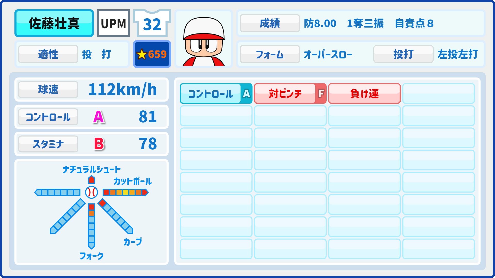
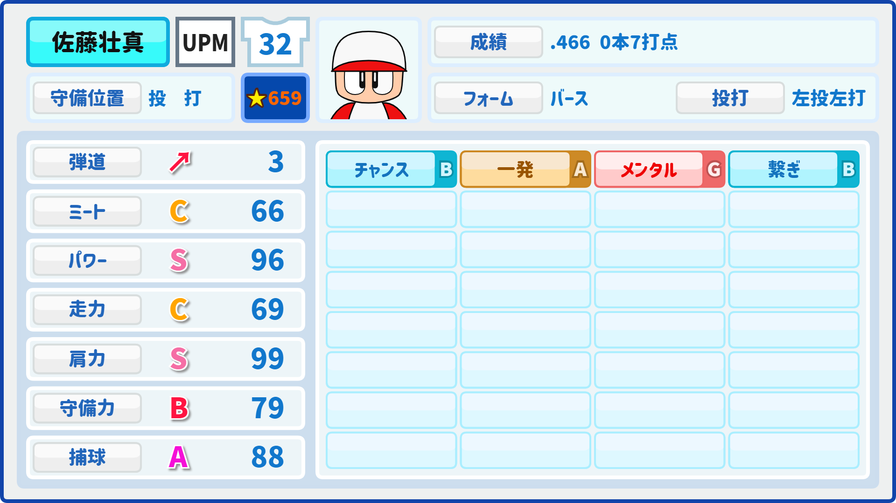

| ポジション | 打 投 |
|---|---|
| 投打 | 左投左打 |
| 生年月日 | 2012年6月2日 |
| シリーズ | 試合 | 打席 | 打数 | 安打 | 二塁打 | 三塁打 | 本塁打 | 塁打 | 打点 | 四球 | 三振 | 三振率 | 打率 | 長打率 | 出塁率 | OPS |
|---|---|---|---|---|---|---|---|---|---|---|---|---|---|---|---|---|
| 2024S1 | 3 | 49 | 32 | 13 | 9 | 0 | 0 | 22 | 13 | 17 | 16 | 50% | .406 | .687 | .612 | 1.300 |
| 2024S2 | 1 | 19 | 15 | 7 | 7 | 0 | 0 | 14 | 7 | 4 | 2 | 13% | .466 | .933 | .578 | 1.512 |
| 通算 | 4 | 68 | 47 | 20 | 16 | 0 | 0 | 36 | 20 | 21 | 18 | 26.4% | .425 | .765 | .602 | 1.368 |
| シリーズ | 登板 | 勝利 | 敗北 | 完投 | 完封勝 | 投球回数 | 無四球 | 勝率 | 打者 | 被安打 | 被本塁打 | 四球 | 奪三振 | 奪三振率 | 自責点 | 防御率 |
| 2024S1 | 3 | 0 | 3 | 2 | 0 | 8 | 1 | .000 | 48 | 33 | 5 | 3 | 9 | >3.375 | 21 | 7.87 |
| 2024S2 | 1 | 0 | 1 | 1 | 0 | 3 | 0 | .000 | 17 | 9 | 0 | 1 | 1 | >1 | 8 | 8.00 |
| 通算 | 4 | 0 | 4 | 3 | 0 | 11 | 1 | .000 | 65 | 43 | 5 | 4 | 10 | >2.45 | 29 | 23.72 |
 
home